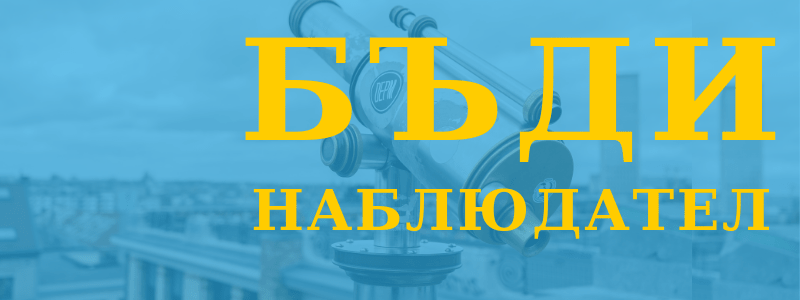

Бъди наблюдател
Напоследък прекарваме повече време в гледане през прозореца, на паважа или на смартфона. Освен че избягваме погледа в среща, в магазина или на улицата, все по- често носим слушалки, а и не търпим прекъсване или забавяне.
Но ако сме спокойни и отворени към случайността, забеляваме повече възможности: във вестника, на табели или в разговор.
Чували ли сте за експеримента с невидимата горила на Даниъл Саймън и Кристофър Шабри? При него пускат на студенти видео с подаване на топка. Задачата им е да преброят колко играчи от всеки отбор има.
По някое време минава човек, облечен в костюм на горила. От 50 до 75% не го забеляват, защото са заети с броене. Феноменът се нарича “слепота на (не)внимание”.
Така всеки ден пропускаме под носа си хиляди неща, понякога важни или вълнуващи.
Разбира се мозъците ни не са предназначени да виждат всичко, иначе ще се побъркаме.
Но да се научим да наблюдаваме спокойно и активно подобрява въображението ни, способността ни за решаване на проблеми и за правене на избори. Освен това води до по- голямо благополучие и щастие.
Наблюдавайте, но какво?
Има няколко основни неща, които заслужават вниманието ни: отпърво най- общо околната среда, хорските и после собствените си особености.
Забележете света наоколо в цялото му великолепие и странност!
Забележете мислите си и ги класифицирайте- на момента или при медитация. Дали принадлежат към миналото (спомен, възстановка, съжаление), настоящето (осъждане, критикуване, анализиране, вманиачаване) или бъдещето (планиране, фантазиране, безпокоене).
Забележете поведението си: какво правите като ви е скучно, ставате ли ненужно агресивни заради дреболии или как се справяте със стреса.
Заглушете нетърпението си
Преди всичко за да сте наблюдателни трябва да се спрете да си намирате занимание веднага след като приключите предишното, което е по- трудно отколкото звучи. Освен търпение съществува спокойствие да работим върху нещо без да чакаме резултати.
Така е и с наблюдението. Например детективите прекарват часове и дори дни в засада, потънали в скука, за да действат за пет минути и да хванат заподозрян. Но това си струва защото е възможно така да спасят живот.
В ежедневието, няма толкова екшън.
Обаче има натрупване на привидно незначителни дейности, погледи и унеси, които ни изглеждат загуба на време, но подхранват въображението ни. Умът, който се рее и се спира неангажирано на различни предмети и теми, възприема най- леко и спокойно. А който не бърза е способен да отлага заключенията, тоест да е по- непредубеден да изучава света и да се възползва от възможностите, които се предоставят.
Освен впечаленията, за да се възползваме от наблюденията, които правим са ни нужни спомени. Признайте си, че паметта ви не струва. Сън, движение и подходяща диета са най- ефективни за подобряването ѝ, но може да ви трябва система или метод. Сигурно не ви трябва "дворец на паметта" като на древните римляни или на Ханибал Лектър, но може да използвате силата на акронимите, музиката и римите. Ако не работи, записвайте си- дори да не го препрочетете, пак помага.
Дори след години експерименти, никога не може да си тотален експерт, но за мнозина е изненадващо какво може да постигнете, ако вършиш разни неща, забелязваш и си записваш. Както казва Бил Гейтс “Повечето хора надценяват това, което могат да направят за една година и подценяват какво могат да направят за десет години.”
И в резултат на безброй предизвикателства, наблюдения и бележки може да откриете нещо ново и оригинално; направо това си е единственият начин.
По- долу ще намерите конкретни идеи как да се тренирате в изкуството на наблюдението.
Практикувайте човекогледане
На бас, че като човек най- важните обекти в живота ви са другите човеци. Шегичка, но е вярно!
Тогава защо посвещаваме на колегите и близките толкова малко внимание и мисъл?
За да промените това несъответствие започнете с нещо лесно, а именно наблюдаване на непознати докато седите в някое кафе или чакате на спирката например. Забележете взаимоотношенията и речта им; ако са сами какви жестове или дейности извършват; какви са дрехите, аксесоарите им или предметите, които държат или носят. Измислете си историята им. Усмихнете им се.
Обаче бъдете етични: не ги снимайте, не ги съдете и не им се подигравайте.
Второ ниво: едни от най- обичаните писатели като Джейн Остин и Марсел Пруст си поставят задача изучаване на характера на хора от различни прослойки, с различни стремежи и желания. Подходът може да се изведе от тази размяна на реплики между Елизабет Бенет и мистър Бингли в “Гордост и предразсъдъци”:
"— Нима вече сте прозрели какъв съм? — възкликна той и се извърна към нея.
— О, да! Познавам ви отлично.
— Бих желал да го приема като комплимент; но в същност тъжно е, че тъй лесно се разкривам.
— Зависи. Това не означава, че един скрит, сложен характер е повече или по-малко достоен за уважение от вашия.
— Лизи — провикна се майка й, — не забравяй къде се намираш и не започвай да плещиш несдържано, както си свикнала у дома.
— Не съм и подозирал — прекъсна я. Бингли, — че обичате да разгадавате човешките характери. Трябва да е забавно занимание.
— Да, но най-забавни са хората със сложен характер. Те имат поне това предимство.
— Но тук, в провинцията — намеси се Дарси, — едва ли има повече от неколцина, достойни за подобно изследване. В тия селски общини човек се движи в много тесен и непроменлив кръг.
— Хората обаче се променят толкова много, че постоянно откриваш у тях по нещо ново."
Свикнали сме да го правим само понякога, но пробвайте да следите изражението и позата на събеседника си не само когато се карате или на първа среща или интервю.
Запитайте се как ви карат да се чувствате нова ситуация или личност. Освен че ще обогати познанието ви за човешката природа, това упражнение може да ви помогне да се предпазите от лошо влияние или напротив да осъзнаете, че негативното чувство е причинено не от отсрещната страна, а от ваши си травми и мнения.
Потъркването на носа може да значи измама, но може и да значи, че ги сърби.
Забележете нещо конкретно
Определете си едно нещо да забелязвате цял ден, например цветове, неудобство или брой или вид от нещо. Например колко коли паркират пред прозореца ви, колко камери ви заснемат на път за работа, колко устройства ползват околните, колко пъти гледат или грабват някой предмет преди да го купят и т.н.
Включете всичките си сетива и умствени способности, за да разберете какво точно се случва.
Подкрепете местните медии
Гледайте местните новини, ако имате късмет да има такива. Така няма да се чудите какво става ако забележите струпване на хора. Ще ви накара също да си дадете сметка за всички начинания и събития наоколо. Може да ви се прииска да излизате повече и следващия път да забелязвате знаци за събития и процеси, които се случват в общността.
Направете обиколка с нови очи
Ако ви се намират под ръка, разходете се с експерти из града, независимо дали колеги или приятели. Понякога се спираме да говорим по любима тема от страх, че ще досадим.
Затова помолете да ви обяснят за типография, история или архитектура докато се разкарвате из града.
Излезте и сред природата с орнитолог, ботанист или спец по ориентиране в гората.
Поспрете се, запишете звуци или нахвърляйте скици или направете снимки хем за да си припомните по- късно, хем да попиете детайлите.
Игнорирайте слънцето
В период на интензивно обучение или кариерно израстване, се фокусирайте в областите, които ви засягат и игнорирайте Слънцето както прави Шерлок Холмс. Великият детектив изумява помощника си доктор Уотсън като казва, че не знаел, че земята се върти около слънцето. На всичко отгоре след като научава този факт се постарава бързичко да го забрави.
В тази връзка белег на майстора е, че знае кое е важно и кое не. Да кажем при спешен случай докторът трябва да знае кои рани са критични и кои може да се пренебрегнат за момента. Мениджърът трябва да знае кои оплаквания са моментни и кои може да доведат до напускането на служител.
Опитът помага, но също тренирането на ума.
Малки издайнически признаци се пропускат, ако човек не може едновременно да вижда и да наблюдава. Ето каква е разликата, описана от Артър Конан Дойл в “Скандал в Бохемия”:
"— Като те слушам да представяш доводите си — коментирах аз, — всичко винаги започва да ми се струва толкова абсурдно елементарно, сякаш и сам бих могъл да стигна до тях, макар че всеки път, когато ги излагаш, се чувствам объркан, докато не ми изясниш процеса си. Все пак продължавам да вярвам, че моите очи не виждат по-зле от твоите.
— Точно така — отговори той, после запали цигара и се отпусна във фотьойла. — Ти също виждаш, но не умееш да забелязваш. Разликата между едното и другото е ясна. Например ти много пъти си виждал стъпалата, които водят от антрето до тази стая тук горе.
— Да, много пъти.
— Колко пъти?
— Ами неколкостотин.
— Тогава колко стъпала има?
— Колко ли? Не знам.
— Точно така! Не си забелязал. А си ги виждал. Точно това ми е мисълта. Ето аз знам, че стъпалата са седемнайсет, защото не само съм ги виждал, но и съм ги забелязвал."
Вземете предвид контекста
Наблюдението е пълно когато не просто да знаете фактите, но да разбирате как обстановката влияе на ума и емоциите ви.
Обстановката може да е както материалната реалност, така и други хора. Да познавате предисторията, средата или ситуация около дадено събитие може да добави огромна стойност към наблюдаваното.
За да прецените вярно трябва също да познавате себе си: рамката, през която гледате на интересуващия ви феномен променя отношението ви.
Да преодолеете своите наклонности, предубедености и предразсъдъци напълно е невъзможно, но може да сме по- наясно, че съществуват. Съществуват списъци с така наречените biases, а книгата на израелския психолог и Нобелов лауреат Даниел Канеман “Мисленето” е изцяло посветена на многобройните начини, по които изкривяваме действителността.
Затова освен да знаем за какво става въпрос е важно как го възприемаме и съответно как го представяме. Ако имате идея за предлагане, пробвайте да я формулирате като въпрос. Дори гледната ви точка да е правилна, ако опитаме да я натрапим не се приема. Ако обаче поискаме съвет, това е друго нещо.
Ако нечие държание ви се струва странно, а получите обяснение, което ви се струва нелогично, вероятно са под някакъв натиск, които не съществува при вас. Замислете се- какво пропускате!
Хората общуват различно в зависимост от социалното положение- не говорите еднакво с професора и с касиера в супермаркета. А също и в зависимост от културата - не може да караш в Мюнхен така както в Мумбай, в манастир се влиза с покрити крака, а на властен шеф не се противоречи и така нататък.
И както споменах по- горе, не вярвайте безрезервно на езика на тялото. Търсете не един знак, а комбинация или алтернативни обяснения, преди да заключите, че някой не ви слуша например защото е със скръстени ръце- може да му е студено.
Погледнете от друг ъгъл
Вече знаете, че трябва да направите крачка назад, за да обхванете цялостната картина. Това означава да се отдалечите от ситуацията физически и емоционално; а също да проучите обстоятелствата.
Американският професор Скот Пейдж има теория, че хората от задните редове или експертите са по- далеч от екшъна, но имат по- пълна представа за ситуацията за разлика от хората от първите редове, които трябва да вземат решение дали да аплодират на крака без да имат информация какво правят тези зад гърба им.
Понякога обаче не забеляваме детайлите дори да ни избодат очите, затова трябва да накараме мозъка си да се вгледа по- внимателно.
Буквално или не вижте света наобратно, за да ви изглежда всичко странно както препоръчвам в съветите ми за редактиране.
Например дигиталните художници обръщат платното хоризонтално за да видят дали нещо изглежда нередно, защото така нарисуваното става непривично и грешките изпъкват.
Бойците от армията пък са научени да сканират околността от дясно- наляво, което ги забавя и съответно забелязват повече подробности.
***
Предприемачката и писателка Маргарет Хефернан твърди, че най- иновативните служители са тези, които нещо ги дразни и затова забелязват модели на поведение и на възникване на проблеми.
Те разчитат повече на интуицията си.
След като забележат нещо любопитно, тяхното разследване води до експериментиране, и така се правят нововъведения и подобрения.
Вижте още: